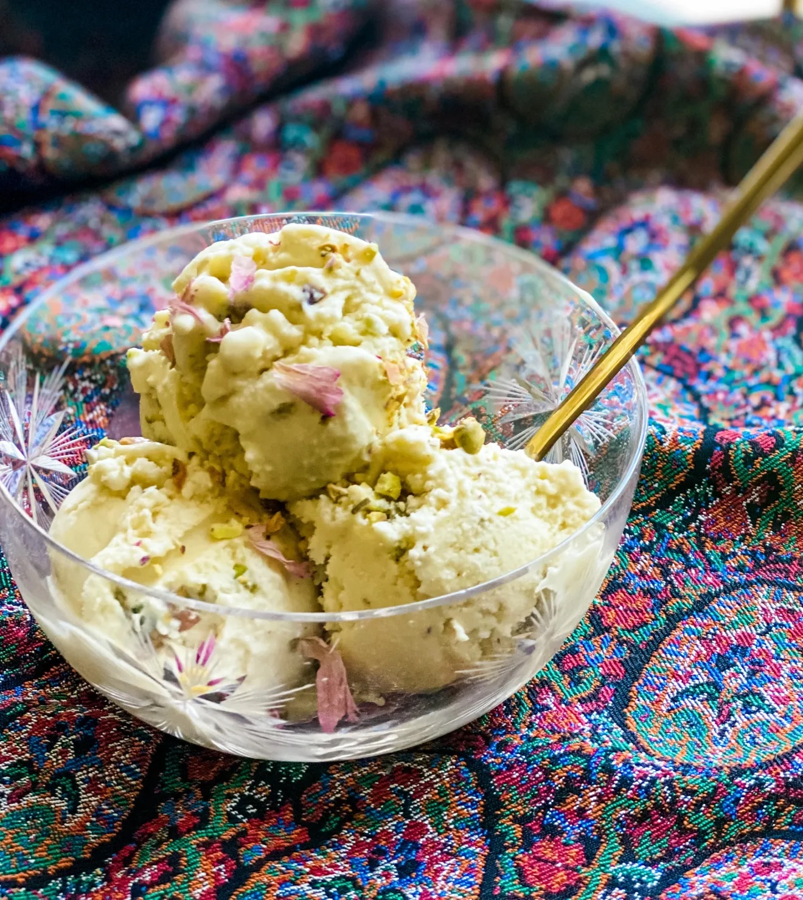

Bastani (Persian Ice Cream) (Vegan)

Description
In my family, this sweet, rosewater and saffron flavored dessert has been a long-standing favorite any time we take trips to Iran. However, finding a vegan alternative proved difficult in both Iran and America, which is where this recipe comes handy!
Note: you will need an ice-cream maker for this recipe. To find saffron and rosewater, places like Whole Foods Market and Middle Eastern markets have them available.
Here's how you can make this ice cream plant-based at home!
Ingredients
- 2 cups Silk Heavy Whipping Cream
- 1 cup unsweetened soy milk
- 3/4 cup cane sugar
- 1 teaspoon of vanilla extract
- 2 tablespoons of saffron and rosewater
- 1/3 - 1/2 cup chopped pistachios
Steps
- A day before you make your ice cream, place a bowl for churning the ice cream to chill in the freezer beforehand.
- Blend Silk heavy cream, soy milk, and sugar for 30 seconds. Add mixture, alongside saffron, vanilla, and roeswater, to a bowl and whisk together.
- Add mixture to pre-chilled bowl and churn until appearance of soft-serve, or based on your ice-cream maker's instructions. (EX: Cuisinart is 20-25 minutes.)
- Add chopped pistachios in the last portion of churning (1-2 minutes).
- Freeze for 2 hours. You can keep this mixture in the freezer for up to 5 days.
- Enjoy!